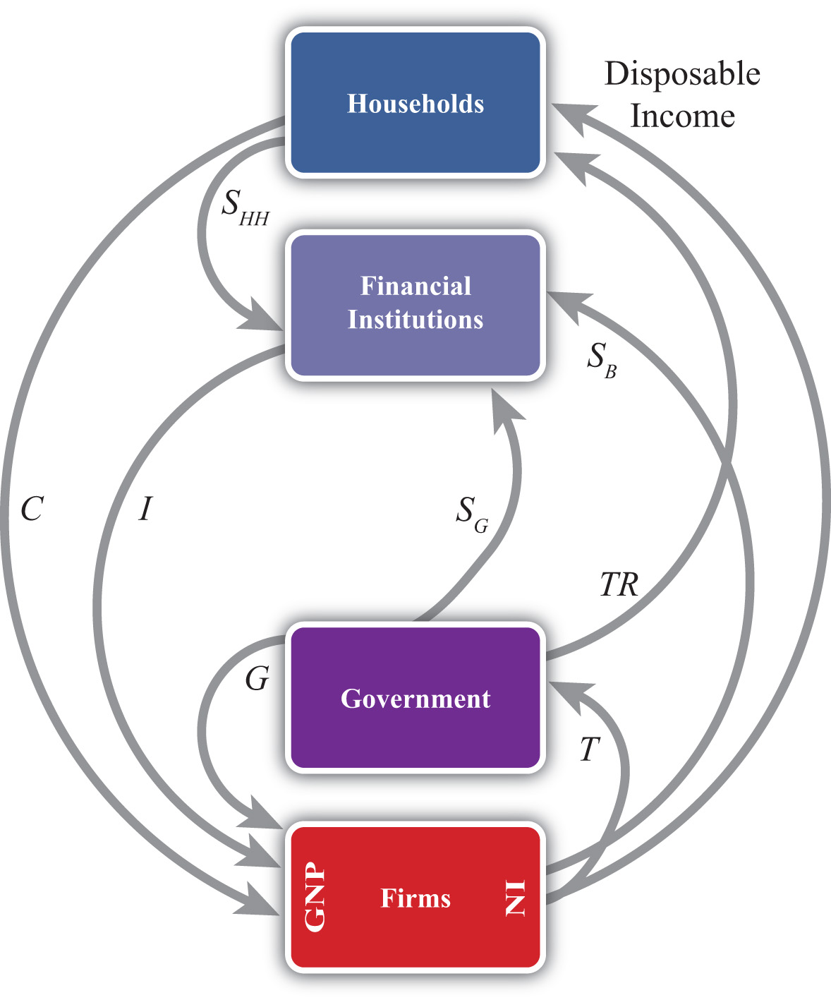
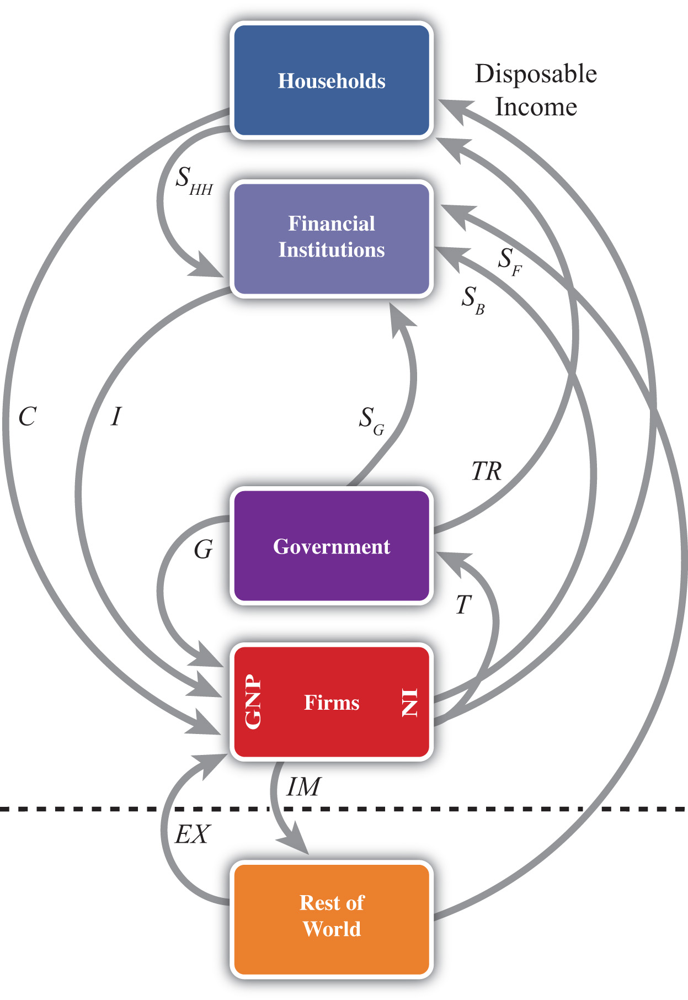

The most important macroeconomic variable tracked by economists and the media is the gross domestic product (GDP). Whether it ought to be so important is another matter that is discussed in this chapter. But before that evaluation can occur, the GDP must be defined and interpreted. This chapter presents the national income identity, which defines the GDP. It also presents several other important national accounts, including the balance of payments, the twin-deficit identity, and the international investment position. These are the variables of prime concern in an international finance course.
Many of the key aggregate variables used to describe an economy are presented in a country’s National Income and Product Accounts (NIPA). National income represents the total amount of money that factors of production earn during the course of a year. This mainly includes payments of wages, rents, profits, and interest to workers and owners of capital and property. The national product refers to the value of output produced by an economy during the course of a year. National product, also called national output, represents the market value of all goods and services produced by firms in a country.
Because of the circular flow of money in exchange for goods and services in an economy, the value of aggregate output (the national product) should equal the value of aggregate income (national income). Consider the adjoining circular flow diagram, Figure 13.1 "A Circular Flow Diagram", describing a very simple economy. The economy is composed of two distinct groups: households and firms. Firms produce all the final goods and services in the economy using factor services (labor and capital) supplied by the households. The households, in turn, purchase the goods and services supplied by the firms. Thus goods and services move between the two groups in the counterclockwise direction. Exchanges are facilitated with the use of money for payments. Thus when firms sell goods and services, the households give the money to the firms in exchange. When the households supply labor and capital to firms, the firms give money to the households in exchange. Thus money flows between the two groups in a clockwise direction.
Figure 13.1 A Circular Flow Diagram
National product measures the monetary flow along the top part of the diagram—that is, the monetary value of goods and services produced by firms in the economy. National income measures the monetary flow along the bottom part of the diagram—that is, the monetary value of all factor services used in the production process. As long as there are no monetary leakages from the system, national income will equal national product.
The national product is commonly referred to as gross domestic product (GDP)Measures the total value of all goods and services produced by a country during a year.. GDP is defined as the value of all final goods and services produced within the borders of a country during some period of time, usually a year. A few things are worth emphasizing about this definition.
First, GDP is measured in terms of the monetary (or dollar) value at which the items exchange in the market. Second, it measures only final goods and services as opposed to intermediate goods. Thus wheat sold by a farmer to a flour mill will not be directly included as part of GDP since the value of the wheat will be included in the value of the flour that the mill sells to the bakery. The value of the flour will in turn be included in the value of the bread sold to the grocery store. Finally, the value of the bread will be included in the price charged by the grocery when the product is finally purchased by the consumer. Only the final bread sale should be included in GDP or else the intermediate values would overstate total production in the economy. Finally, GDP must be distinguished from another common measure of national output, gross national product (GNP)A measure of national income that includes all production by citizens that occurs anywhere in the world. It is measured using the current account balance for exports and imports..
Briefly, GDP measures all production within the borders of the country regardless of who owns the factors used in the production process. GNP measures all production achieved by domestic factors of production regardless of where that production takes place. For example, if a U.S. resident owns a factory in Malaysia and earns profits on the operation of that factory, then those profits would be counted as production by a U.S. factory owner and thus would be included in the U.S. GNP. However, since that production took place beyond U.S. borders, it would not be counted as the U.S. GDP. Alternatively, if a Dutch resident owns a factory in the United States, then the fraction of that production that accrues to the Dutch owner would be counted as part of the U.S. GDP since the production took place in the United States. It would not be counted as part of the U.S. GNP, however, since the production was done by a foreign factor owner.
GDP is probably the most widely reported and closely monitored aggregate statistic. GDP is a measure of the size of an economy. It tells us the total amount of “stuff” the economy produces. Since most of us, as individuals, prefer to have more stuff rather than less, it is straightforward to extend this to the national economy to argue that the higher the GDP, the better off the nation. For this simple reason, statisticians track the growth rate of GDP. Rapid GDP growth is a sign of growing prosperity and economic strength. Falling GDP indicates a recession, and if GDP falls significantly, we call it an economic depression.
For a variety of reasons, GDP should be used only as a rough indicator of the prosperity or welfare of a nation. Indeed, many people contend that GDP is an inadequate measure of national prosperity. Below is a list of some of the reasons why GDP falls short as an indicator of national welfare.
The following are several important weaknesses of GDP as a measure of economic well-being:
Jeopardy Questions. As in the popular television game show, you are given an answer to a question and you must respond with the question. For example, if the answer is “a tax on imports,” then the correct question is “What is a tariff?”
GDP is used widely as an indicator of the success and economic well-being of the people of a nation. However, for many reasons it is not the perfect indicator. Briefly comment on the following statements related to this issue:
The national income or product identity describes the way in which the gross domestic product (GDP) is measured, as the sum of expenditures in various broad spending categories. The identity, shown below, says that GDP is the sum of personal consumption expenditures (C), private investment expenditures (I), government consumption expenditures (G), and expenditures on exports (EX) minus expenditures on imports (IM):
GDP = C + I + G + EX − IM.Personal consumption expenditures (C), or “consumption” for short, include goods and services purchased by domestic residents. These are further subdivided into durable goods, commodities that can be stored and that have an average life of at least three years; nondurable goods, all other commodities that can be stored; and services, commodities that cannot be stored and are consumed at the place and time of purchase. Consumption also includes foreign goods and services purchased by domestic households.
Private domestic investment (I), or “investment” for short, includes expenditures by businesses on fixed investment and any changes in business inventories. Fixed investment, both residential and nonresidential, consists of expenditures on commodities that will be used in a production process for more than one year. It covers all investment by private businesses and by nonprofit institutions, regardless of whether the investment is owned by domestic residents or not. Nonresidential investment includes new construction, business purchases of new machinery, equipment, furniture, and vehicles from other domestic firms and from the rest of the world. Residential investment consists of private structures, improvements to existing units, and mobile homes. Note that this term does not include financial investments made by individuals or businesses. For example, one purchase of stock as an “investment” is not counted here.
Government expenditures include purchases of goods, services, and structures from domestic firms and from the rest of the world by federal, state, and local government. This category includes compensation paid to government employees, tuition payments for higher education, and charges for medical care. Transfer payments, such as social insurance payments, government medical insurance payments, subsidies, and government aid are not included as a part of government expenditures.
Exports consist of goods and services that are sold to nonresidents.
Imports include goods and services purchased from the rest of the world.
The difference between exports and imports (EX − IM) is often referred to as net exports. Receipts and payments of factor income and transfer payments to the rest of the world (net) are excluded from net exports. Including these terms changes the trade balance definition and reclassifies national output as growth national product (GNP).
It is important to emphasize why imports are subtracted in the national income identity because it can lead to serious misinterpretations. First, one might infer (incorrectly) from the identity that imports are subtracted because they represent a cost to the economy. This argument often arises because of the typical political emphasis on jobs or employment. Thus higher imports imply that goods that might have been produced at home are now being produced abroad. This could represent an opportunity cost to the economy and justify subtracting imports in the identity. However, this argument is wrong.
The second misinterpretation that sometimes arises is to use the identity to suggest a relationship between imports and GDP growth. Thus it is common for economists to report that GDP grew at a slower than expected rate last quarter because imports rose faster than expected. The identity suggests this relationship because, obviously, if imports rise, GDP falls. However, this interpretation is also wrong.
The actual reason why imports are subtracted in the national income identity is because imports appear in the identity as hidden elements in consumption, investment, government, and exports. Thus imports must be subtracted to assure that only domestically produced goods are being counted. Consider the following details.
When consumption expenditures, investment expenditures, government expenditures, and exports are measured, they are measured without accounting for where the purchased goods were actually made. Thus consumption expenditures (C) measures domestic expenditures on both domestically produced and foreign-produced goods. For example, if a U.S. resident buys a television imported from Korea, that purchase would be included in domestic consumption expenditures. Likewise, if a business purchases a microscope made in Germany, that purchase would be included in domestic investment. When the government buys foreign goods abroad to provide supplies for its foreign embassies, those purchases are included in government expenditures. Finally, if an intermediate product is imported, used to produce another good, and then exported, the value of the original imports will be included in the value of domestic exports.
This suggests that we could rewrite the national income identity in the following way:
GDP = (CD + CF) + (ID + IF) + (GD + GF) + (EXD + EXF) − IM,where CD represents consumption expenditures on domestically produced goods, CF represents consumption expenditures on foreign-produced goods, ID represents investment expenditures on domestically produced goods, IF represents investment expenditures on foreign-produced goods, GD represents government expenditures on domestically produced goods, GF represents government expenditures on foreign-produced goods, EXD represents export expenditures on domestically produced goods, and EXF represents export expenditures on previously imported intermediate goods. Finally, we note that all imported goods are used in consumption, investment, or government or are ultimately exported, thus
IM = CF + IF + GF + EXF.Plugging this expression into the identity above yields
GDP = CD + ID + GD + EXDand indicates that GDP does not depend on imports at all.
The reason imports are subtracted in the standard national income identity is because they have already been included as part of consumption, investment, government spending, and exports. If imports were not subtracted, GDP would be overstated. Because of the way the variables are measured, the national income identity is written such that imports are added and then subtracted again.
This exercise should also clarify why the previously described misinterpretations were indeed wrong. Since imports do not affect the value of GDP in the first place, they cannot represent an opportunity cost, nor do they directly or necessarily influence the size of GDP growth.
Jeopardy Questions. As in the popular television game show, you are given an answer to a question and you must respond with the question. For example, if the answer is “a tax on imports,” then the correct question is “What is a tariff?”
The national income identity says that gross domestic product is given by consumption expenditures, plus investment expenditures, plus government expenditures, plus exports, minus imports. In short, this is written as GDP = C + I + G + EX − IM.
Consider each of the following expenditures below. Indicate in which category or categories (C, I, G, EX, or IM) the item would be accounted for in the United States.
| Product | Category |
|---|---|
| a. German resident purchase of a U.S.-made tennis racket | |
| b. U.S. firm purchase of a U.S.-made office copy machine | |
| c. Salaries to U.S. troops in Iraq | |
| d. School spending by county government | |
| e. U.S. household purchase of imported clothing |
Below are the economic data for the fictional country of Sandia. Write out the national income identity. Verify whether Sandia’s data satisfy the identity.
Table 13.1 Sandia’s Economic Data (Billions of Dollars)
| Gross Domestic Product | 400 |
| Imports of Goods and Services | 140 |
| Investment Spending | 20 |
| Private Saving | 30 |
| Exports of Goods and Services | 100 |
| Government Transfers | 40 |
| Government Tax Revenues | 140 |
| Government Spending | 140 |
| Consumption Spending | 280 |
To have a solid understanding of the international economy, it is useful to know the absolute and relative sizes of some key macroeconomic variables like the gross domestic product (GDP). For example, it is worthwhile to know that the U.S. economy is the largest in the world because its annual GDP is about $14 trillion, not $14 million or $14 billion. It can also be useful to know about how much of an economy’s output each year is consumed, invested, or purchased by the government. Although knowing that the U.S. government expenditures in 2008 were about $2.9 trillion is not so important, knowing that government expenditures made up about 20 percent of GDP can be useful to know.
Table 13.2 "U.S. Gross Domestic Product (in Billions of Dollars)" contains U.S. statistics for the national income and product accounts for the years 2007 and 2008. The table provides the numerical breakdown of GDP not only into its broad components (C, I, G, etc.) but also into their major subcategories. For example, consumption expenditures are broken into three main subcategories: durable goods, nondurable goods, and services. The left-hand column indicates which value corresponds to the variables used in the identity.
Table 13.2 U.S. Gross Domestic Product (in Billions of Dollars)
| 2007 | 2008 | 2008 (Percentage of GDP) | ||
|---|---|---|---|---|
| GDP | Gross domestic product | 13,807.5 | 14,280.7 | 100.0 |
| C | Personal consumption expenditures | 9,710.2 | 10,058.5 | 70.4 |
| Durable goods | 1,082.8 | 1,022.8 | 7.2 | |
| Nondurable goods | 2,833.0 | 2,966.9 | 20.8 | |
| Services | 5,794.4 | 6,068.9 | 42.5 | |
| I | Gross private domestic investment | 2,134.0 | 2,004.1 | 14.0 |
| Nonresidential | 1,503.8 | 1,556.2 | 10.9 | |
| Structures | 480.3 | 556.3 | 3.9 | |
| Equipment and software | 1,023.5 | 999.9 | 7.0 | |
| Residential | 630.2 | 487.8 | 3.4 | |
| Change in business inventories | −3.6 | −39.9 | −0.0 | |
| G | Government consumption expenditures and gross investment | 2,674.8 | 2,883.2 | 20.2 |
| Federal | 979.3 | 1,071.2 | 7.5 | |
| National defense | 662.2 | 734.3 | 5.1 | |
| Nondefense | 317.1 | 336.9 | 2.4 | |
| State and local | 1,695.5 | 1,812.1 | 12.6 | |
| EX | Exports | 1,662.4 | 1,867.8 | 13.1 |
| Goods | 1,149.2 | 1,289.6 | 9.0 | |
| Services | 513.2 | 578.2 | 4.0 | |
| IM | Imports | 2,370.2 | 2,533.0 | 17.7 |
| Goods | 1,985.2 | 2,117.0 | 14.8 | |
| Services | 385.1 | 415.9 | 2.9 |
Source: Bureau of Economic Analysis, National Economic Accounts, Gross Domestic Product (GDP), at http://www.bea.gov/national/nipaweb/Index.asp.
There are a number of important things to recognize and remember about these numbers.
First, it is useful to know that U.S. GDP in 2008 was just over $14 trillion (or $14,000 billion). This is measured in 2008 prices and is referred to as nominal GDP. This number is useful to recall, first because it can be used in to judge relative country sizes if you happen to come across another country’s GDP figure. The number will also be useful in comparison with U.S. GDP in the future. Thus if in 2020 you read that U.S. GDP is $20 trillion, you’ll be able to recall that back in 2008 it was just $14 trillion. Also, note that between 2007 and 2008, the United States added over $600 billion to GDP.
The next thing to note about the numbers is that consumption expenditures are the largest component of U.S. GDP, making up about 70 percent of output in 2008. That percentage is relatively constant over time, even as the economy moves between recessions and boom times (although it is up slightly from 68 percent in 1997). Notice also that services is the largest subcategory in consumption. This category includes health care, insurance, transportation, entertainment, and so on.
Gross private domestic investment, “investment” for short, accounted for just 14 percent of GDP in 2008. This figure is down from almost 17 percent just two years before and is reflective of the slide into the economic recession. As GDP began to fall at the end of 2008, prospects for future business opportunities also turned sour, and so investment spending also fell. As the recession continued into 2009, we can expect that number to fall even further the next year.
The investment component of GDP is often the target of considerable concern in the United States. Investment represents how much the country is adding to the capital stock. Since capital is an input into production, in general the more capital equipment available, the greater will be the national output. Thus investment spending is viewed as an indicator of future GDP growth. Perhaps the higher is investment, the faster the economy will grow in the future.
One concern about the U.S. investment level is that, as a percentage of GDP, it is lower than in many countries in Europe, especially in China and other Asian economies. In many European countries, it is above 20 percent of GDP. The investment figure is closer to 30 percent in Japan and over 35 percent in China. There was a fear among some observers, especially in the 1980s and early 1990s, that lower U.S. investment relative to the rest of the world would ultimately lead to slower growth. That this projection has not been borne out should indicate that higher investment is not sufficient by itself to assure higher growth.
Government expenditures on goods and services in the United States amounted to 20 percent of GDP in 2008. Due to the recession and the large government stimulus package in 2009, we can expect this number will rise considerably next year. Recall that this figure includes state, local, and federal spending but excludes transfer payments. When transfer payments are included, government spending plus transfers as a percentage of GDP exceeds 30 percent in the United States.
Two things are worth noting. First, the state and local spending is almost twice the level of federal spending. Second, most of the federal spending is on defense-related goods and services.
Exports in the United States accounted for 13 percent of GDP in 2008 (up from 10 percent in 2003) and are closing in on the $2 trillion level. Imports into the United States are at $2.5 trillion, amounting to almost 18 percent of GDP. In terms of the dollar value of trade, the United States is the largest importer and exporter of goods and services in the world. However, relative to many other countries, the United States trades less as a percentage of GDP.
Jeopardy Questions. As in the popular television game show, you are given an answer to a question and you must respond with the question. For example, if the answer is “a tax on imports,” then the correct question is “What is a tariff?”
The balance of payments accounts is a record of all international transactions that are undertaken between residents of one country and residents of other countries during the year. The accounts are divided into several subaccounts, the most important being the current accountA record of all international transactions for goods and services, income payments and receipts, and unilateral transfers. and the financial accountA record of all international transactions for assets.. The current account is often further subdivided into the merchandise trade account and the service account. These are each briefly defined in Table 13.3 "Balance of Payments Accounts Summary".
Table 13.3 Balance of Payments Accounts Summary
| Current Account | Record of all international transactions for goods and services, income payments and receipts, and unilateral transfers. The current account is used in the national income identity for GNP. |
| Merchandise Trade AccountA record of all international transactions for goods only. | Record of all international transactions for goods only. Goods include physical items like autos, steel, food, clothes, appliances, furniture, etc. |
| Services AccountA record of all international transactions for services only. | Record of all international transactions for services only. Services include transportation, insurance, hotel, restaurant, legal, consulting, etc. |
| Goods and Services AccountA record of all international transactions for goods and services only. | Record of all international transactions for goods and services only. The goods and services account is used in the national income identity for GDP. |
| Financial Account | Record of all international transactions for assets. Assets include bonds, Treasury bills, bank deposits, stocks, currency, real estate, etc. |
The balance on each of these accounts is found by taking the difference between exports and imports.
The current account (CA) balance is defined as CA = EXG,S,IPR,UT − IMG,S,IPR,UT where the G,S,IPR,UT superscript is meant to include exports and imports of goods (G), services (S), income payments and receipts (IPR), and unilateral transfers (UT). If CA > 0, then exports of goods and services exceed imports and the country has a current account surplus. If CA < 0, then imports exceed exports and the country has a current account deficit.
Income payments represent the money earned (i.e., income) by foreign residents on their investments in the United States. For example, if a British company owns an office building in the United States and brings back to the United Kingdom a share of the profit earned there as a part of its income, then this is classified as an income payment on the current account of the balance of payments.
Income receipts represent the money earned by domestic residents on their investments abroad. For example, if a U.S. company owns an assembly plant in Costa Rica and brings back to the United States a share of the profit earned there as a part of its income, then this is classified as an income receipt on the current account of the balance of payments.
It may be helpful to think of income payments and receipts as payments for entrepreneurial services. For example, a British company running an office building is providing the management services and taking the risks associated with operating the property. In exchange for these services, the company is entitled to a stream of the profit that is earned. Thus income payments are classified as an import, the import of a service. Similarly, the U.S. company operating the assembly plant in Costa Rica is also providing entrepreneurial services for which it receives income. Since in this case the United States is exporting a service, income receipts are classified as a U.S. export.
Unilateral transfers represent payments that are made or received that do not have an offsetting product flow in the opposite direction. Normally, when a good is exported, for example, the good is exchanged for currency such that the value of the good and the value of the currency are equal. Thus there is an outflow and an inflow of equal value. An accountant would record both sides of this transaction, as will be seen in the next section. However, with a unilateral transfer, money flows out, but nothing comes back in exchange or vice versa. The primary examples of unilateral transfers are remittances and foreign aid. Remittances occur when a person in one country transfers money to a relative in another country and receives nothing in return. Foreign aid also involves a transfer, expecting nothing in return.
The merchandise trade balance (or goods balance) can be defined as GB = EXG − IMG, where we record only the export and import of merchandise goods. If GB > 0, the country would have a (merchandise) trade surplus. If GB < 0, the country has a trade deficit.
The service balance can be defined as SB = EXS − IMS, where we record only the export and import of services. If SB > 0, the country has a service surplus. If SB < 0, the country has a service deficit.
The goods and services balance (or goods balance) can be defined as GSB = EXG&S − IMG&S, where we record the export and import of both merchandise goods and services. If GSB > 0, the country would have a goods and services (G&S) surplus. If GB < 0, the country has a G&S deficit. Note that sometimes people will refer to the difference EXG&S − IMG&S as net exports. Often when this term is used the person is referencing the goods and services balance.
Here it is important to point out that when you hear a reference to a country’s trade balance, it could mean the merchandise trade balance, or it could mean the goods and services balance, or it could even mean the current account balance.
Occasionally, one will hear trade deficit figures reported in the U.S. press followed by a comment that the deficit figures refer to the “broad” measure of trade between countries. In this case, the numbers reported refer to the current account deficit rather than the merchandise trade deficit. This usage is developing for a couple of reasons. First of all, at one time, around thirty years ago or more, there was very little international trade in services. At that time, it was common to report the merchandise trade balance since that accounted for most of the international trade. In the past decade or so, service trade has been growing much more rapidly than goods trade and it is now becoming a significant component of international trade. In the United States, service trade exceeds 30 percent of total trade. Thus a more complete record of a country’s international trade is found in its current account balance rather than its merchandise trade account.
But there is a problem with reporting and calling it the current account deficit because most people don’t know what the current account is. There is a greater chance that people will recognize the trade deficit (although most could probably not define it either) than will recognize the current account deficit. Thus the alternative of choice among commentators is to call the current account deficit a trade deficit and then define it briefly as a “broad” measure of trade.
A simple solution would be to call the current account balance the “trade balance” since it is a record of all trade in goods and services and to call the merchandise trade balance the “merchandise goods balance,” or the “goods balance” for short. I will ascribe to this convention throughout this text in the hope that it might catch on.
There are two well-known measures of the national income of a country: GDP and GNP. Both represent the total value of output in a country during a year, only measured in slightly different ways. It is worthwhile to understand the distinction between the two and what adjustments must be made to measure one or the other.
Conceptually, the gross domestic product (GDP) represents the value of all goods and services produced within the borders of the country. The gross national product (GNP) represents the value of all goods and services produced by domestic factors of production.
Thus production in the United States by a foreign-owned company is counted as a part of U.S. GDP since the productive activity took place within the U.S. borders, even though the income earned from that activity does not go to a U.S. citizen. Similarly, production by a U.S. company abroad will generate income for U.S. citizens, but that production does not count as a part of GDP since the productive activity generating that income occurred abroad. This production will count as a part of GNP though since the income goes to a U.S. citizen.
The way GDP versus GNP is measured is by including different items in the export and import terms. As noted above, GDP includes only exports and imports of goods and services, implying also that GDP excludes income payments and receipts and unilateral transfers. When these latter items are included in the national income identity and the current account balance is used for EX − IM, the national income variable becomes the GNP. Thus the GNP measure includes income payments and receipts and unilateral transfers. In so doing, GNP counts as additions to national income the profit made by U.S. citizens on its foreign operations (income receipts are added to GNP) and subtracts the profit made by foreign companies earning money on operations in the U.S. (income payments are subtracted).
To clarify, the national income identities for GDP and GNP are as follows:
GDP = C + I + G + EXG&S − IMG&Sand
GNP = C + I + G + EXG,S,IPR,UT − IMG,S,IPR,UT.Finally, the financial account balance can be defined as KA = EXA − IMA, where EXA and IMA refer to the export and import of assets, respectively. If KA > 0, then the country is exporting more assets than it is importing and it has a financial account surplus. If KA < 0, then the country has a financial account deficit.
The financial account records all international trade in assets. Assets represent all forms of ownership claims in things that have value. They include bonds, Treasury bills, stocks, mutual funds, bank deposits, real estate, currency, and other types of financial instruments. Perhaps a clearer way to describe exports of assets is to say that domestic assets are sold to foreigners, whereas imports of assets mean foreign assets that are purchased by domestic residents.
It is useful to differentiate between two different types of assets. First, some assets represent IOUs (i.e., I owe you). In the case of bonds, savings accounts, Treasury bills, and so on, the purchaser of the asset agrees to give money to the seller of the asset in return for an interest payment plus the return of the principal at some time in the future. These asset purchases represent borrowing and lending. When the U.S. government sells a Treasury bill (T-bill), for example, it is borrowing money from the purchaser of the T-bill and agrees to pay back the principal and interest in the future. The Treasury bill certificate, held by the purchaser of the asset, is an IOU, a promissory note to repay principal plus interest at a predetermined time in the future.
The second type of asset represents ownership shares in a business or property, which is held in the expectation that it will realize a positive rate of return in the future. Assets, such as common stock, give the purchaser an ownership share in a corporation and entitle the owner to a stream of dividend payments in the future if the company is profitable. The future sale of the stock may also generate a capital gain if the future sales price is higher than the purchase price. Similarly, real estate purchases—say, of an office building—entitle the owner to the future stream of rental payments by the tenants in the building. Owner-occupied real estate, although it does not generate a stream of rental payments, does generate a stream of housing services for the occupant-owners. In either case, if real estate is sold later at a higher price, a capital gain on the investment will accrue.
An important distinction exists between assets classified as IOUs and assets consisting of ownership shares in a business or property. First of all, IOUs involve a contractual obligation to repay principal plus interest according to the terms of the contract or agreement. Failure to do so is referred to as a default on the part of the borrower and is likely to result in legal action to force repayment. Thus international asset purchases categorized as IOUs represent international borrowing and lending.
Ownership shares, on the other hand, carry no such obligation for repayment of the original investment and no guarantee that the asset will generate a positive rate of return. The risk is borne entirely by the purchaser of the asset. If the business is profitable, if numerous tenants can be found, or if real estate values rise over time, then the purchaser of the asset will make money. If the business is unprofitable, office space cannot be leased, or real estate values fall, then the purchaser will lose money. In the case of international transactions for ownership shares, there is no resulting international obligation for repayment.
Jeopardy Questions. As in the popular television game show, you are given an answer to a question and you must respond with the question. For example, if the answer is “a tax on imports,” then the correct question is “What is a tariff?”
In this section, we demonstrate how international transactions are recorded on the balance of payment accounts. The balance of payments accounts can be presented in ledger form with two columns. One column is used to record credit entries. The second column is used to record debit entries.
Almost every transaction involves an exchange between two individuals of two items believed to be of equal value.An exception is the case of unilateral transfers. These transfers include pension payments to domestic citizens living abroad, foreign aid, remittances, and other types of currency transfers that do not include an item on the reverse side being traded. Thus if one person exchanges $20 for a baseball bat with another person, then the two items of equal value are the $20 of currency and the baseball bat. The debit and credit columns in the ledger are used to record each side of every transaction. This means that every transaction must result in a credit and debit entry of equal value.
By convention, every credit entry has a “+” placed before it, while every debit entry has a “−” placed before it. The plus on the credit side generally means that money is being received in exchange for that item, while the minus on the debit side indicates a monetary payment for that item. This interpretation in the balance of payments accounts can be misleading, however, since in many international transactions, as when currencies are exchanged, money is involved on both sides of the transaction. There are two simple rules of thumb to help classify entries on the balance of payments:
In the following examples, we will consider entries on the U.S. balance of payments accounts. Since it is a U.S. account, the values of all entries are denominated in U.S. dollars. Note that each transaction between a U.S. resident and a foreign resident would result in an entry on both the domestic and the foreign balance of payments accounts, but we will look at only one country’s accounts.
Finally, we will classify entries in the balance of payments accounts into one of the two major subaccounts, the current account or the financial account. Any time an item in a transaction is a good or a service, the value of that item will be recorded in the current account. Any time an item in a transaction is an asset, the value of that item will be recorded in the financial account.
Note that in June 1999, what was previously called the “capital account” was renamed the “financial account” in the U.S. balance of payments. A capital account stills exists but now includes only exchanges in nonproduced, nonfinancial assets. This category is very small, including such items as debt forgiveness and transfers by migrants. However, for some time, it will be common for individuals to use the term “capital account” to refer to the present “financial account.” So be warned.
Consider two individuals, one a resident of the United States, the other a resident of Japan. We will follow them through a series of hypothetical transactions and look at how each of these transactions would be recorded on the balance of payments. The exercise will provide insight into the relationship between the current account and the financial account and give us a mechanism for interpreting trade deficits and surpluses.
Step 1: We begin by assuming that each individual wishes to purchase something in the other country. The U.S. resident wants to buy something in Japan and thus needs Japanese currency (yen) to make the purchase. The Japanese resident wants to buy something in the United States and thus needs U.S. currency (dollars) to make the purchase. Therefore, the first step in the story must involve an exchange of currencies.
So let’s suppose the U.S. resident exchanges $1,000 for ¥112,000 on the foreign exchange market at a spot exchange rate of 112 ¥/$. The transaction can be recorded by noting the following:
| Step 1 | U.S. Balance of Payments ($) | |
|---|---|---|
| Credits (+) | Debits (−) | |
| Current Account | 0 | |
| Financial Account | +1,000 ($ currency) | −1,000 (¥ currency) |
Step 2: Next, let’s assume that the U.S. resident uses his ¥112,000 to purchase a camera from a store in Japan and then brings it back to the United States. Since the transaction is between the U.S. resident and the Japanese store owner, it is an international transaction and must be recorded on the balance of payments. The item exported in this case is the Japanese currency. We’ll assume that there has been no change in the exchange rate and thus the currency is still valued at $1,000. This is recorded as a credit entry on the financial account and labeled “¥ currency” in the table below. The item being imported into the United States is a camera. Since a camera is a merchandise good and is valued at ¥112,000 = $1,000, the import is recorded as a debit entry on the current account in the table below.
| Step 2 | U.S. Balance of Payments ($) | |
|---|---|---|
| Credits (+) | Debits (−) | |
| Current Account | 0 | |
| Financial Account | +1,000 (¥ currency) | 0 |
Step 3a: Next, let’s assume that the Japanese resident uses his $1,000 to purchase a computer from a store in the United States and then brings it back to Japan. The computer, valued at $1,000, is being exported out of the United States and is considered a merchandise good. Therefore, a credit entry of $1,000 is made in the following table on the current account and labeled as “computer.” The other side of the transaction is the $1,000 of U.S. currency being given to the U.S. store owner by the Japanese resident. Since the currency, worth $1,000, is being imported and is an asset, a $1,000 debit entry is made in the table on the financial account and labeled “$ currency.”
| Step 3a | U.S. Balance of Payments ($) | |
|---|---|---|
| Credits (+) | Debits (−) | |
| Current Account | +1,000 (computer) | |
| Financial Account | 0 | −1,000 ($ currency) |
We can construct summary statistics for the entries that have occurred so far by summing the debit and credit entries in each account and eliminating double entries. In the following table, we show all the transactions that have been recorded. The sum of credits in the current account is the $1,000 computer. The sum of debits in the current account is the $1,000 camera. On the financial account there are two credit entries of $1,000, one representing U.S. currency and the other representing Japanese currency. There are two identical entries on the debit side. Since there is a U.S. currency debit and credit entry of equal value, this means that the net flow of currency is zero. The dollars that left the country came back in subsequent transactions. The same is true for Japanese currency. When reporting the summary statistics, the dollar and yen currency financial account entries would cancel, leaving a net export of assets equal to zero and the net inflow of assets equal to zero as well.
| Summary 1, 2, 3a | U.S. Balance of Payments ($) | |
|---|---|---|
| Credits (+) | Debits (−) | |
| Current Account | +1,000 (computer) | |
| Financial Account | +1,000 ($ currency), +1,000 (¥ currency) | −1,000 ($ currency), −1,000 (¥ currency) |
After cancellations, then, the summary balance of payments statistics would look as in the following table.
| Summary 1, 2, 3a | U.S. Balance of Payments ($) | |
|---|---|---|
| Credits (+) | Debits (−) | |
| Current Account | +1,000 (computer) | |
| Financial Account | 0 | 0 |
The current account balance is found by summing the credit and debit entries representing exports and imports, respectively. This corresponds to the difference between exports and imports of goods and services. In this example, the current account (or trade) balance is CA = $1,000 − $1,000 = 0. This means the trade account is balanced—exports equal imports.
The financial account balance is also found by summing the credit and debit entries. Since both entries are zero, the financial account balance is also zero.
Step 3b: Step 3b is meant to substitute for step 3a. In this case, we imagine that the Japanese resident decided to do something other than purchase a computer with the previously acquired $1,000. Instead, let’s suppose that the Japanese resident decides to save his money by investing in a U.S. savings bond. In this case, $1,000 is paid to the U.S. government in return for a U.S. savings bond certificate (an IOU) that specifies the terms of the agreement (i.e., the period of the loan, interest rate, etc.). The transaction is recorded on the financial account as a credit entry of $1,000 representing the savings bond that is exported from the country and a debit entry of $1,000 of U.S. currency that is imported back into the country.
| Step 3b | U.S. Balance of Payments ($) | |
|---|---|---|
| Credits (+) | Debits (−) | |
| Current Account | 0 | |
| Financial Account | +1,000 (U.S. savings bond) | −1,000 ($ currency) |
We can construct summary statistics assuming that steps 1, 2, and 3b have taken place. This is shown in the following table. The sum of credits in the current account in this case is zero since there are no exports of goods or services. The sum of debits in the current account is the $1,000 camera.
On the financial account, there are three credit entries of $1,000: one representing U.S. currency, the other representing Japanese currency, and the third representing the U.S. savings bond. There are two $1,000 entries on the debit side: one representing U.S. currency and the other representing Japanese currency. Again, the dollar and yen currency financial account entries would cancel, leaving only a net export of assets equal to the $1,000 savings bond. The net inflow of assets is equal to zero.
| Summary 1, 2, 3b | U.S. Balance of Payments ($) | |
|---|---|---|
| Credits (+) | Debits (−) | |
| Current Account | 0 | |
| Financial Account |
+1,000 ($ currency), +1,000 (¥ currency), +1,000 (U.S. savings bond) |
−1,000 ($ currency), −1,000 (¥ currency) |
After cancellations, the summary balance of payments statistics would look like the following table.
| Summary 1, 2, 3b | U.S. Balance of Payments ($) | |
|---|---|---|
| Credits (+) | Debits (−) | |
| Current Account | 0 | |
| Financial Account | +1,000 (U.S. savings bond) | 0 |
The current account balance is found by summing the credit and debit entries representing exports and imports, respectively. This corresponds to the difference between exports and imports of goods and services. In this example, the current account (or trade) balance is CA = $0 − $1,000 = −$1,000. This means there is a trade deficit of $1,000. Imports of goods and services exceed exports of goods and services.
The financial account balance is also found by summing the credit and debit entries. In this example, the financial account balance is KA = $1,000 − $0 = +$1,000. This means the financial account has a surplus of $1,000. Exports of assets exceed imports of assets.
The exercise above teaches a number of important lessons. The first lesson follows from the summary statistics, suggesting that the following relationship must hold true:
current account balance + financial account balance = 0.In the first set of summary statistics (1, 2, 3a), both the current account and the financial account had a balance of zero. In the second example (1, 2, 3b), the current account had a deficit of $1,000 while the financial account had a surplus of $1,000.
This implies that anytime a country has a current account deficit, it must have a financial account surplus of equal value. When a country has a current account surplus, it must have a financial account deficit of equal value. And when a country has balanced trade (a balanced current account), then it must have balance on its financial account.
It is worth emphasizing that this relationship is not an economic theory. An economic theory could be right or it could be wrong. This relationship is an accounting identity. (That’s why an identity symbol rather than an equal sign is typically used in the formula above.) An accounting identity is true by definition.
Of course, the identity is valid only if we use the true (or actual) current account and financial account balances. What countries report as their trade statistics are only the measured values for these trade balances, not necessarily the true values.
Statisticians and accountants attempt to measure international transactions as accurately as possible. Their objective is to record the true values or to measure trade and financial flows as accurately as possible. However, a quick look at any country’s balance of payments statistics reveals that the balance on the current account plus the balance on the financial account rarely, if ever, sums to zero. The reason is not that the identity is wrong but rather that not all the international transactions on the balance of payments are accounted for properly. Measurement errors are common.
These errors are reported in a line in the balance of payments labeled “statistical discrepancy.” The statistical discrepancy represents the amount that must be added or subtracted to force the measured current account balance and the measured financial account balance to zero. In other words, in terms of the measured balances on the balance of payments accounts, the following relationship will hold:
current account balance + financial account balance + statistical discrepancy = 0.The second lesson from this example is that imbalances (deficits and surpluses) on the balance of payments accounts arise as a result of a series of mutually voluntary transactions in which equally valued items are traded for each other. This is an important point because it is often incorrectly interpreted that a trade deficit implies that unfair trade is taking place. After all, the logic goes, when imports exceed exports, foreigners are not buying as many of our goods as we are buying of theirs. That’s unequal exchange and that’s unfair.
The story and logic are partially correct but incomplete. The logic of the argument focuses exclusively on trade in goods and services but ignores trade in assets. Thus it is true that when imports of goods exceed exports, we are buying more foreign goods and services than foreigners are buying of ours. However, at the same time, a current account deficit implies a financial account surplus. A financial account surplus, in turn, means that foreigners are buying more of our assets than we are buying of theirs. Thus when there is unequal exchange on the trade account, there must be equally opposite unequal exchange on the financial account. In the aggregate, imbalances on a current account, a trade account, or a financial account do not represent unequal exchanges between countries.
Jeopardy Questions. As in the popular television game show, you are given an answer to a question and you must respond with the question. For example, if the answer is “a tax on imports,” then the correct question is “What is a tariff?”
Use the information below from the 1997 U.S. national income accounts to calculate the following. (Assume the balance on income and unilateral transfers was zero.)
Table 13.4 U.S. National Income Statistics, 1997 (Billions of Dollars)
| Gross Domestic Product | 8,080 |
| Exports of Goods and Services | 934 |
| Merchandise Exports | 678 |
| Income Receipts | 257 |
| Imports of Goods and Services | 1,043 |
| Merchandise Imports | 877 |
| Income Payments | 244 |
| Net Unilateral Transfers | −45 |
One of the most informative ways to learn about a country’s balance of payments statistics is to take a careful look at them for a particular year. We will do that here for the U.S. balance of payments (U.S. BoP) statistics for 2008. Below we present an abbreviated version of the U.S. BoP statistics.
The line numbers refer to the line item on the complete Bureau of Economic Analysis (BEA) report. All debit entries have a minus sign, and all credit entries have a plus sign. A brief description of each line item is provided below where all values are rounded downward for easy reference with the table. To see the entries for every line or for more recent statistics, see the U.S. Department of Commerce, Bureau of Economic Analysis Web site, located at http://www.bea.gov.
Table 13.5 U.S. Balance of Payments, 2008 (Millions of Dollars Seasonally Adjusted)
| Line Number | Category | Value (credits [+], debits [−]) |
|---|---|---|
| Current Account | ||
| 1 | Exports of goods, services, and income receipts | +2,591,233 |
| 3 | Goods | +1,276,994 |
| 4 | Services | +549,602 |
| 13 | Income receipts on U.S. assets abroad | +761,593 |
| 14 | Direct investment receipts | +370,747 |
| 15 | Other private receipts | +385,940 |
| 16 | U.S. government receipts | +4,906 |
| 18 | Imports of goods, services, and income | −3,168,938 |
| 20 | Goods | −2,117,245 |
| 21 | Services | −405,287 |
| 30 | Income payments on foreign assets in the United States | −636,043 |
| 31 | Direct investment payments | −120,862 |
| 32 | Other private payments | −349,871 |
| 33 | U.S. government payments | −165,310 |
| 35 | Unilateral transfers, net | −128,363 |
| Capital Account | ||
| 39 | Capital account transactions, net | +953 |
| Financial Account | ||
| 40 | U.S. assets abroad (increase/financial outflow [−]) | −106 |
| 41 | U.S. official reserve assets | −4,848 |
| 46 | U.S. government assets | −529,615 |
| 50 | U.S. private assets | +534,357 |
| 51 | Direct investment | −332,012 |
| 52 | Foreign securities | +60,761 |
| 53 | U.S. claims reported by U.S. nonbanks | +372,229 |
| 54 | U.S. claims reported by U.S. banks | +433,379 |
| 55 | Foreign assets in the United States (increase/financial inflow [+]) | +534,071 |
| 56 | Foreign official assets in the United States | +487,021 |
| 63 | Other foreign assets in the United States, net | +47,050 |
| 64 | Direct investment | +319,737 |
| 65 | U.S. Treasury securities | +196,619 |
| 66 | U.S. securities other than T-bills | −126,737 |
| 67 | U.S. currency | +29,187 |
| 68 | U.S. liabilities reported by U.S. nonbanks | −45,167 |
| 69 | U.S. liabilities reported by U.S. banks | −326,589 |
| 71 | Statistical discrepancy (sum of above with sign reversed) | +200,055 |
Below we provide a brief description of each line item that appears on this abbreviated balance of payments record.
Line 1, $2.59 trillion, shows the value of all U.S. exports of goods, services, and income. This value is equal to the sum of lines 3, 4, and 13.
Line 3, $1.27 trillion, shows exports of merchandise goods. This includes any physical items that leave the country.
Line 4, $549 billion, shows exports of services to foreigners. This category includes travel services, passenger fares, royalties, license fees, insurance legal services, and other private services.
Line 13, $761 billion, shows income receipts on U.S. assets abroad. This represents profits and interest earned by U.S. residents on investments in other countries. In a sense, these are payments for services rendered where the services include entrepreneurial services in the case of foreign-operated factories, or monetary services in the case of interest and dividend payments on foreign securities. This line is included in a measure of gross national product (GNP) since this income is accruing to U.S. factors of production. However, the line is excluded from a measure of gross domestic product (GDP) since production did not take place within the borders of the country. Income receipts are divided into four subcategories: direct investment receipts, other private receipts, U.S. government receipts, and compensation of employees.
Line 14, $370 billion, shows direct investment receipts. This represents profit earned by U.S. companies on foreign direct investment (FDI), where FDI is defined as a greater than 10 percent ownership share in a foreign company. Note that this is not new investments but rather the profit and dividends earned on previous investments.
Line 15, $385 billion, shows other private receipts. This category includes interest and profit earned by individuals, businesses, investment companies, mutual funds, pension plans, and so on. In effect, all private investment income that accrues on investments worth less than 10 percent of a company would be included here.
Line 16, $4.9 billion, shows U.S. government income receipts. This refers to interest and other income earned by government investments abroad. Notice that this item is very small compared to the other two income categories.
Line 18, $3.1 trillion, records imports of goods, services, and income. This value is equal to the sum of lines 20, 21, and 29.
Line 20, $2.1 trillion, shows imports of merchandise goods. Notice that goods imports make up about two-thirds of total imports.
Line 21, $405 billion, shows imports of services such as travel services, passenger fares, insurance, and so on.
Line 30, $636 billion, shows income payments on foreign assets in the United States. This corresponds to income earned by foreigners who operate companies in the United States or income earned on other U.S.-based assets held by foreigners. This entry is further divided into four components: direct investment payments, other private payments, U.S. government payments, and compensation of employees.
Line 31, $120 billion, records direct investment payments to foreigners in the United States. This represents profit earned on foreign direct investment by foreign residents’ companies, where FDI is defined as a greater than 10 percent ownership share in a U.S. company. Note that this is not new investments but rather the profit and dividends earned on previous investments.
Line 32, $349 billion, reports other private payments. This category includes interest and profit earned by individuals, businesses, investment companies, mutual funds, pension plans, and so on. In effect, all private investment income that accrues on investments worth less than 10 percent of a company would be included here.
Line 33, $165 billion, records payments made by the U.S. government to foreigners. This item represents mostly interest payments on U.S. Treasury bills owned by foreigners.
Line 35, $128 billion, records net unilateral transfers. These transfers refer to government grants to foreign nations, government pension payments, and private remittances to family and friends abroad. A debit entry here means that the net transfers are outbound, that is, more transfers are made from the U.S. to individuals abroad than are made in the reverse direction.
Line 39, $953 million, represents net capital account transactions.
Line 40, $106 million, shows the value of purchases of foreign assets by U.S. residents, hence it is referred to as a capital outflow. The line is the sum of U.S. official reserve assets (line 41), U.S. government assets (line 46), and U.S. private assets (line 50).
Line 41, $4.8 billion, represents net U.S. official reserve transactions. Any purchases or sales of foreign currency in a foreign exchange intervention by the central bank would be recorded here. Since the item is a debit entry, it means that the U.S. central bank made net purchases of foreign assets (currencies) in 2008.
It is worth noting that this line is more important for a country maintaining a fixed exchange rate. To maintain a credible fixed exchange rate, central banks must periodically participate in the foreign exchange market. This line measures the extent of that participation and is sometimes referred to as the “balance of payments” in a fixed exchange rate system.
Line 46, $529 billion, represents net purchases of assets by the U.S. government, though not by the Federal Reserve.
Line 50, $534 billion, shows private purchases of foreign assets by U.S. residents. It is the primary component of total U.S. assets abroad. The item is composed of direct investment (line 51), foreign securities (line 52), U.S. claims reported by U.S. nonbanks (line 53), and U.S. claims reported by U.S. banks (line 54).
Line 51, $332 billion, shows direct investment by U.S. residents abroad. It would include purchases of factories, stocks, and so on by U.S. businesses and affiliates in foreign countries as long as there is a controlling interest in excess of 10 percent voting share.
Line 52, $60 billion, shows net purchases of foreign stocks and bonds by U.S. individuals and businesses when there is no controlling interest in the foreign company. Most purchases by U.S. mutual funds, pension funds, and insurance companies would be classified here.
Line 53, $372 billion, shows U.S. resident purchases of foreign assets reported by nonbanks.
Line 54, $433 billion, reports U.S. resident purchases of foreign assets reported by U.S. banks. This may include items like foreign currency denominated demand deposits held by U.S. businesses and individuals in U.S. banks.
Line 55, $534 billion, shows the sum total of foreign assets in the United States. This item refers to all purchases of U.S. assets by foreign residents, thus, it is listed as a capital inflow. This line is composed of the sum of foreign official assets in the United States (line 56), and other foreign assets in the United States (line 63).
Line 56, $487 billion, refers to purchases of U.S. assets by foreign governments or foreign central banks.
Line 63, $47 billion, refers to all other foreign assets purchases of U.S. assets and is the main component of capital inflows. It is composed of direct investment (line 64), U.S. Treasury securities (line 65), U.S. securities other than T-bills (line 66), U.S. currency (line 67), U.S. liabilities reported by U.S. nonbanks (line 68), and U.S. liabilities reported by U.S. banks (line 69).
Line 64, $319 billion, refers to purchases of U.S. factories and stocks when there is a greater than 10 percent ownership share.
Line 65, $196 billion, shows total purchases of U.S. Treasury bills by foreigners. This corresponds to foreign loans to the U.S. government.
Line 66, $126 billion, shows non-U.S. Treasury bill and nondirect investment purchases of stocks and bonds by foreigners.
Line 67, $29 billion, a debit entry, represents U.S. currency that has been repatriated (net). Typically, this flow is a credit indicating an outflow of U.S. currency. Because of the expectation that the U.S. dollar will remain stable in value, it is often held by residents in inflationary countries to prevent the deterioration of purchasing power. It is estimated that over $270 billion of U.S. currency circulates abroad and is used in exchange for foreign goods and services or simply held to store value. The value on line 67 represents only the amount that flowed back in 2007.
Line 68, $45 billion, shows deposits and purchases of U.S. assets by foreigners reported by U.S. nonbanks.
Line 69, $326 billion, reports deposits and purchases of U.S. assets by foreigners reported by U.S. banks. Thus if a foreign resident opens a checking account in a U.S. bank denominated in U.S. dollars, that value would be recorded here.
Line 71, $200 billion, represents the statistical discrepancy. It is the sum of all the above items with the sign reversed. It is included to satisfy the accounting requirement that all debit entries be balanced by credit entries of equal value. Thus when the statistical discrepancy is included, the balance on the complete balance of payments is zero.
Table 13.6 "Balances on the U.S. Balance of Payments, 2008 (Millions of Dollars Seasonally Adjusted) (Credits [+], Debits [−])" reports a number of noteworthy balance of payments “balances” for 2008. In effect these subaccount balances allow us to identify net inflows or outflows of specific categories of goods, services, income, and assets.
Table 13.6 Balances on the U.S. Balance of Payments, 2008 (Millions of Dollars Seasonally Adjusted) (Credits [+], Debits [−])
| Lines 1 + 18 + 35 | Current account balance | −706, 068 |
| Lines 3 + 20 | Trade (goods) balance | −840, 251 |
| Lines 4 + 21 | Services balance | +144, 315 |
| Lines 2 + 19 | Goods and services balance | −695, 936 |
| Lines 12 + 29 | Investment income balance | +118, 231 |
| Lines 40 + 55 | Financial account balance | +533, 965 |
| Line 71 | Statistical discrepancy | +200,055 |
The sum of lines 1, 18, and 35 (i.e., exports of goods, services, and income; imports of goods, services, and income; and unilateral transfers [maintaining signs]) represents the current account (CA) balance. In 2008 in the United States, the CA balance was −706 billion dollars where the minus sign indicates a deficit. Thus the United States recorded a current account deficit of $706 billion. Note that the current account balance is often reported as the “trade balance using a broad measure of international trade.”
Because unilateral transfers are relatively small and because investment income can be interpreted as payments for a service, it is common to say that a current account deficit means that imports of goods and services exceed exports of goods and services.
The sum of lines 3 and 20 (i.e., exports of goods and imports of goods) is known as the merchandise trade balance, or just trade balance for short. In 2008, the United States recorded a trade deficit of over $840 billion. This means that the United States imported more physical goods than it exported.
The sum of lines 4 and 21, service exports and service imports, represents the service trade balance or just service balance. The table shows that the United States recorded a service surplus of over $144 billion in 2008. In other words, the U.S. exports more services than it imports from the rest of the world.
The sum of lines 2 and 19, exports of goods and services and imports of goods and services, is a noteworthy trade balance because this difference is used in the national income identity for GDP. In contrast, the national income identity for GNP includes the current account balance instead. In 2008, the United States recorded a goods and services trade deficit of over $695 billion.
The sum of lines 12 and 29, income receipts on U.S. assets abroad and income payments on foreign assets in the United States, represents the balance on investment income. In 2008, there was a recorded investment income surplus of over $118 billion in the United States. This means that U.S. residents earned more on their investments abroad than foreigners earned on their investments in the United States.
The sum of lines 40 and 55, U.S. assets abroad and foreign assets in the United States, represents the financial account balance. In 2008, the United States recorded a financial account surplus of over $533 billion. A surplus on capital account means that foreigners are buying more U.S. assets than U.S. residents are buying of foreign assets. These asset purchases, in part, represent international borrowing and lending. In this regard, a capital account surplus implies that the United States is borrowing money from the rest of the world.
Finally, line 70 records the 2008 U.S. statistical discrepancy as a $200 billion credit entry. This implies that recorded debit entries on the balance of payments exceeded recorded credit entries. Thus an additional $200 billion credit entry is needed to make the accounts balance. This is the largest statistical discrepancy recorded since the BEA records began in 1960.
The presence of a statistical discrepancy means that there are international transactions that have taken place but have not been recorded or accounted for properly. One might conclude that the size of the errors is $200 billion, but this does not follow. The discrepancy only records the net effect. It is conceivable that $400 billion of credit entries and $200 billion of debit entries were missed. Or possibly, $800 billion of debit entries and $600 billion of credit entries were missed. In each case, the difference is $200 billion dollars, but clearly the amount of error is substantially more in the latter case.
Based on the way the balance of payments data are collected, it seems likely that the primary source of the statistical discrepancy is on the capital account side rather than the current account side. This is because trade in goods, the primary component of the current account, is measured directly and completely by customs officials, while capital account data are acquired through surveys completed by major banks and financial institutions. This does not mean that errors cannot occur, however. Goods trade is tangible and thus is easier to monitor. Capital transactions, in contrast, can be accomplished electronically and invisibly and thus are more prone to measurement errors. Service and income transactions on the current account are also likely to exhibit the same difficulty in monitoring, implying that errors in the current account are more likely to arise in these subcategories.
Jeopardy Questions. As in the popular television game show, you are given an answer to a question and you must respond with the question. For example, if the answer is “a tax on imports,” then the correct question is “What is a tariff?”
One of the important relationships among aggregate economic variables is the so-called twin-deficit identityShows the relationship between a country’s government budget deficit and a country’s current account deficit. It says that the sum of net private saving (Sp − I) and the current account deficit must equal the government budget deficit., a term in reference to a country’s government budget deficit and a simultaneous current account deficit. The name for this identity became commonplace during the 1980s and 1990s because at that time the United States experienced deficits in both of these accounts. Now, as we will see later, the identity will be a misnomer in many circumstances since there is no reason that “twin” deficits need to always appear together on these two national accounts. In fact, some countries will, at times, experience a deficit on one account and a surplus on the other. Also, at times, a country will experience a surplus on both accounts.
Thus a better title to this section would be “The Relationship between a Country’s Government Budget Deficit and Its Current Account Deficit.” However, since 2004, the United States finds itself back in the twin-deficit scenario, and since “twin-deficit identity” rolls off the tongue much more easily, we will stick to this title.
To understand this identity it will be helpful to take a much more careful look at the national income identity. This time I will build up the identity in a stepwise fashion using a circular flow diagram to better visualize the flows of money within an economy. A circular flow diagram is typically one of the first principles shown to students in an introductory macroeconomics class. Its purpose is to show the flow of money between the major players (or agents) within an economy. Circular flow diagrams can be either simple or complex depending on how many agents one introduces into the system and how finely one wishes to break down the monetary flows.
Figure 13.2 The Simplest Circular Flow

The simplest version of a circular flow diagram considers an economy consisting of two agents: households and firms. We imagine that firms produce goods and services using labor as an input.
The flow of money is shown in Figure 13.2 "The Simplest Circular Flow". The C arrow represents the dollar value of consumption expenditures made by households to purchase the goods and services produced and sold by firms. (The goods and services flow could be represented by an arrow in the opposite direction to C, but we leave that out for simplicity.) Since we assume in this case that there are only households buying goods, all GNP consists of C. The money that flows to firms from sales of consumption goods is given to the workers in exchange for their labor services. This monetary flow is represented by the arrow labeled “disposable income.” Disposable income is all the money households have to spend, which in this case is equal to the national income (NI).
Note especially that we use GNP rather than GDP as our measure of national income so that flows with the rest of the world later are properly defined.
Figure 13.3 The Circular Flow Adding Financial Institutions

The circular flow can be extended one step by adding financial institutions in Figure 13.3 "The Circular Flow Adding Financial Institutions". Financial institutions represent any company that facilitates borrowing and lending; the prime example is a bank. However, they may also include investment companies, pension funds, and mutual funds. The presence of financial institutions allows some money to be diverted from the consumption flow. In Figure 13.3 "The Circular Flow Adding Financial Institutions", these diversions are represented by SHH, representing household savings and SB, representing business saving. Some of the revenue earned by firms is not actually given out to workers in the form of wages. Instead some money is “retained” in the form of profit and excess earnings. These retained earnings are generally used to purchase investment goods to help an industry replace worn-out capital equipment and to add new capital. Much of these retained earnings may be used directly to purchase new capital equipment, although some of it will be saved by depositing it in a financial institution. For simplicity we will imagine that all such business saving flows through the financial system, hence the SB arrow. In addition, households generally hold back some of their income from spending and deposit it into pension plans, savings accounts, and so on. Thus we include the arrow from households. The easiest way to think of the diagram is to imagine that financial institutions take deposits from firms and households and then lend out the money to finance investment spending, I. With some exceptions, this is the way it will often work. One notable exception is that some of the money lent by banks is often used to finance consumption rather than investment. This occurs whenever households finance consumption spending using a credit card. However, we can avoid this complication by defining SHH as being “net” savings, where the net means “after subtracting household borrowing.” With this definition in mind, it should be clear that SHH can be negative—that is, its flow reversed—if household borrowing exceeds household saving.
We can now identify several important relationships. The first one relates to an important decision made by households. They choose how much of their disposable income should be spent on consumption and how much should be saved. You may recall from previous courses that the fraction of income spent on consumption goods (from an extra dollar of income) is called the marginal propensity to consumeThe additional amount of aggregate consumption that arises from an additional dollar of national income., while the fraction of income saved is called the marginal propensity to save.
A second relationship is shown on the left side of the Firms box. This indicates that GNP is equal to the sum of C and I. This version of the national income identity would only be valid if there were no government sector and no trade with the rest of the world.
A third important relationship is shown by noting the flow of money in and out of the financial sector. There we see two arrows flowing in (i.e., SHH and SB) and one flow outward (i.e., I). This leads to the identity
SHH + SB = I,indicating that the sum of household and business saving equals investment. A more common simplification of this relationship is shown by noting the following:
SP = SHH + SB,where SP is called private saving. Thus private saving equals the sum of household saving and business saving. This will simplify the above identity to
SP = I,or simply, private saving equals investment. Note that the term “private” is used here to distinguish it from government (or public sector) saving, which we’ll include next.
Figure 13.4 The Circular Flow Adding Government
Next, let’s add in the government sector in Figure 13.4 "The Circular Flow Adding Government". The government is shown both to take money out of the circular flow and to inject money back in. Money is withdrawn first in the form of taxes (T). In the adjoining diagram, taxes are represented as a flow of money directly from firms, as if it is entirely a tax on income. This is a simplification since in reality taxes are collected in many forms from many different agents. For example, governments collect profit taxes from firms and financial institutions, sales and property taxes from households, and tariffs on traded goods (not included yet). All of these taxes are assumed to be lumped together in the T flow and withdrawn directly from national income.
Tax revenues (TR) can be spent in two separate ways. The TR flow represents transfer payments injected into the household income stream. Transfer payments include social security paid to retired workers, Medicaid and welfare payments, unemployment, and so on. These are government expenditures that do not exchange for a particular good or service. The second type of expenditure is G. G represents spending by government for the purchase of goods and services produced by firms. It includes defense spending, education, police and fire protection, and so on.
The final monetary flow, shown flowing out of the government, is labeled SG and refers to government saving. It should be obvious that the money collected by government in the form of taxes need not always equal government expenditures. In the event that tax revenues exceed expenditures, the government would have extra money left over. We imagine that this money would be saved in the financial sector since it is always better to collect interest when possible. Hence we draw the flow of excess funds, government saving (SG), flowing from government into the financial sector.
We can now represent the flow of funds in and out of the government sector with the following identity:
SG = T − TR − G.When T exceeds the sum of TR and G, the government has extra saving that flows into the financial sector. These funds would then be available to lend out and finance additional investment.
Of course, what is more typical of many governments is for the sum of TR and G to exceed tax revenue, T. In this case, the flow of government saving (SG) would be negative and would be represented in the diagram as a flow in the opposite direction. In this case, the government would be borrowing money from the financial sector to finance its excess expenditures. We would also say that the government is running a budget deficit.
In short, negative government saving, that is, SG < 0, implies a government budget deficit, which the government finances by borrowing from the financial sector.
Otherwise, positive government saving, that is, SG > 0, implies a government budget surplus, which results either in additions to saving or a repayment of previous debt.
Next, in this version of the circular flow, we can represent the national income identity as the flow of money into firms. In this case, GNP equals the sum of C, I, and G. This version would only be Accurate when there is no trade with the rest of the world.
Lastly, with government included, we must rewrite the relationship representing the flows in and out of the financial sector. This now becomes
SHH + SB + SG = I.This identity says that the sum of household, business, and government saving must equal private investment expenditures.
Figure 13.5 The Circular Flow Adding the RoW
The final circular flow diagram shown in Figure 13.5 "The Circular Flow Adding the RoW" extends the previous version to include trade flows with the rest of the world. The rest of the world (RoW) is shown at the very bottom of the adjoining diagram, below the dotted line, which represents the border. Trade with the RoW consists first of exports of goods, services, income and transfers, and expenditures on exports (EX), represented by a flow into firms since money is being used by foreigners to purchase the exported products. Second, imports of goods, services, income and transfers, and imports (IM) are subtracted from firms, resulting in an arrow from firms to the RoW. This adjustment accounts for the fact that measured expenditures made by households, the government, and firms in a open economy will consist of purchases of both domestic and imported goods. Thus the C, I, and G flows will include their purchases of imports, and these should not be included as part of GNP. In essence, the money used to buy imported products is redirected to the foreign firms, hence we have the outflow of money. (For a more complete explanation see Chapter 13 "National Income and the Balance of Payments Accounts", Section 13.1 "National Income and Product Accounts".)
This completes the national income identity with all major sectors included and now becomes
GNP = C + I + G + EX − IM,which is represented by the flow of money into (and away from) firms on the left side of the diagram. However, as noted elsewhere, EX − IM, the balance on the current account, need not be equal to zero. If EX − IM > 0, then the country would have a current account (CA) surplus, whereas if EX − IM < 0 the country would have a CA deficit.
Consider when EX − IM < 0. In this case, more money flows out to purchase imports than flows back in to purchase exports. Essentially, there is a loss of money to the RoW despite some exceptions; however, this money does not remain outside the country. Instead, it is brought right back in and deposited into financial institutions (shown as the SF flow on the diagram). In other words, it is saved. This saving represents the country’s financial account surplus, which is equal and opposite to the CA deficit (see Chapter 13 "National Income and the Balance of Payments Accounts", Section 13.5 "Recording Transactions on the Balance of Payments" for a more complete explanation).
The key point is that foreign saving offsets the CA deficit. This can be represented by the relationship showing the inflows and outflows from the RoW, namely,
SF = IM − EX.This says that foreign saving equals the CA deficit. From the perspective of the foreigners, we would refer to SF as money saved or lent to the domestic country. From the perspective of the domestic country, SF would be considered money borrowed from the RoW.
Clearly, since a country may run a surplus on trade (i.e., EX − IM > 0), SF could also be negative. In this case, the RoW would either be dissaving, meaning it is withdrawing previously accumulated saving from the domestic country, or the RoW would be borrowing money from the domestic country. This would occur if a domestic bank makes a loan to someone abroad. Alternatively, from the perspective of the domestic country, we can say it is lending money to the RoW when SF < 0.
The twin-deficit identity is derived by accounting for the monetary flows in and out of the financial sector in version four of the circular flow. This results in the following identity:
SHH + SB + SG + SF = I.This says that the sum of household saving, business saving, government saving, and foreign saving must equal private investment spending. An equivalent version can be written by recalling that household plus business saving equals private saving to get
SP + SG + SF = I.The identity is best interpreted by noting that there are four key sources for funds in the financial sector that are not part of the consumption stream. The pool of funds to finance investment can be drawn from households, businesses, the government, or from the RoW. Also, the sum of all funds not used for consumption must be equal to the amount spent on investment goods.
It is important to note that this relationship is an accounting identity. This means that the relationship must be true as long as all variables are measured properly. This is not an economic theory, which is a proposition that may or may not be true. In practice, this identity rarely adds up, however, because the variables are not typically measured accurately.
To turn this identity into the “twin-deficit” identity, we must merely take note of several previous definitions. Recall that
SG = T − TR − G, SF = IM − EX,and
SP = SHH + SB.Plugging these into identity 1 above yields
SP + T − TR − G + IM − EX = I.Reorder these to get the following twin-deficit identity:
(SP − I) + (IM − EX) = (G + TR − T).This is a popular way of writing the twin-deficit identity since it explicitly indicates two deficits. If the second expression (IM − EX) > 0, then the country has a current account deficit (i.e., a trade deficit). If the right-hand-side expression (G + TR − T) > 0, then the country has a government budget deficit. The expression in total, then, demonstrates that these two deficits are related to each other according to this accounting identity. Indeed, the difference between the government budget deficit and the trade deficit must equal the difference between private saving and investment as shown here:
(SP − I) = (G + TR − T) − (IM − EX).Perhaps the best way to get a feel for the twin-deficit relationship in a country is to look at the numbers. Table 13.7 "U.S. Twin-Deficit Figures (GDP), 1997–2008" and Table 13.8 "China Twin-Deficit Figures (GDP), 1997–2007" show values for the twin-deficit identity in the United States and in China over the past ten years or so. All values are presented as a percentage of GDP. Also, because the data on the balance of payments never add up, which results in a statistical discrepancy term, the twin-deficit identity numbers do not add up. To avoid that problem, the private saving numbers presented are not the actual reported values but the values saving would have to be to assure the twin-deficit identity adds up—that is, it is derived as a residual value.
Table 13.7 U.S. Twin-Deficit Figures (GDP), 1997–2008
| (Sp − I) + Current Account Deficit = Govt. Budget Deficit | ||||
|---|---|---|---|---|
| Year | Private Saving* (%) | Investment (%) | Current Account Deficit (%) | Govt. Budget Deficit (%) |
| 2008 | 13.5 | 14.0 | 4.7 | 4.2 |
| 2007 | 11.7 | 15.4 | 5.3 | 1.6 |
| 2006 | 12.1 | 16.7 | 6.1 | 1.5 |
| 2005 | 12.9 | 16.5 | 6.1 | 2.5 |
| 2004 | 14.0 | 16.1 | 5.5 | 3.4 |
| 2003 | 14.0 | 15.2 | 4.8 | 3.6 |
| 2002 | 13.4 | 15.1 | 4.4 | 2.7 |
| 2001 | 11.6 | 15.9 | 3.8 | −0.5 |
| 2000 | 11.0 | 17.7 | 4.2 | −2.4 |
| 1999 | 12.6 | 17.5 | 3.2 | −1.7 |
| 1998 | 13.8 | 17.3 | 2.4 | −1.0 |
| 1997 | 15.2 | 16.7 | 1.7 | 0.2 |
| * Private saving is calculated as a residual. | ||||
Source: U.S. Bureau of Economic Analysis, National Economic Accounts, Frequently Requested NIPA Tables. See U.S. BEA interactive tables for the years indicated at http://www.bea.gov/national/nipaweb/SelectTable.asp?Popular=Y.
Table 13.8 China Twin-Deficit Figures (GDP), 1997–2007
| (Sp − I) + Current Account Deficit = Govt. Budget Deficit | ||||
|---|---|---|---|---|
| Year | Private Saving* (%) | Investment (%) | Current Account Deficit (%) | Govt. Budget Deficit (%) |
| 2007 | 53.0 | 42.3 | −11.3 | −0.6 |
| 2006 | 52.8 | 42.6 | −9.4 | 0.8 |
| 2005 | 51.1 | 42.7 | −7.2 | 1.2 |
| 2004 | 48.1 | 43.2 | −3.6 | 1.3 |
| 2003 | 46.0 | 41.0 | −2.8 | 2.2 |
| 2002 | 43.0 | 37.9 | −2.4 | 2.6 |
| 2001 | 40.1 | 36.5 | −1.3 | 2.3 |
| 2000 | 39.5 | 35.3 | −1.7 | 2.5 |
| 1999 | 39.6 | 36.2 | −1.4 | 1.9 |
| 1998 | 40.2 | 36.2 | −2.9 | 1.1 |
| 1997 | 40.6 | 36.7 | −3.1 | 0.7 |
| * Private saving is calculated as a residual. | ||||
Source: China Data Online, China Statistical Yearbook. See China Statistical Yearbooks located at http://chinadataonline.org/member/yearbooksp/default.asp?StartYear=1981&EndYear=2009&IFFirst=yes&page=2.
The twin-deficit numbers reveal some interesting patterns. As of the most recent data (2008), the United States has twin deficits, with a CA deficit of 4.7 percent of GDP and a government budget deficit of 4.2 percent. Since these numbers are almost equal, it is as if the U.S. government deficit, which must be financed with borrowing, is being financed by borrowed funds from abroad. In the previous year, 2007, government borrowing requirements were much lower, at 1.6 percent, but borrowing from foreigners was higher at 5.3 percent. The extra borrowing allowed the U.S. savings rate to remain much lower than the private investment requirement. We can interpret this year as one in which private investment was mostly financed with borrowings from abroad.
The United States has had twin deficits since 2001, when it finished a four-year run with a trade deficit and a government budget surplus. This demonstrates that twin “deficits” do not always arise despite the label used to describe the identity. During the budget surplus years the government was able to retire some of its outstanding debt, but the country also ran CA deficits implying, essentially, borrowings from foreigners. As in 2007, these years also describe periods in which foreign borrowings are used to maintain a higher investment level than can be sustained with the lower national savings rate.
In contrast, consider the twin-deficit numbers calculated in the same way for China during the same period. The differences with the U.S. numbers are striking. The two things that stand out immediately are the significantly higher values for private saving and investment. Instead of numbers in the midteens in the United States, China’s percentages are in the midforties to low fifties. Again, the savings terms are calculated as residuals, so there may be some error there, but nonetheless it is clear that China both saves and invests about three times more than the United States as a percentage of GDP. Because it invests so much more, the implication from the national income identity is that China consumes much less than the United States as a percentage. Indeed, China’s consumption figures (not shown) are usually less than 50 percent of GDP.
Indeed, this is why China and many other Asian economies are described as high-saving and low-consuming countries. The United States in comparison is described as a high-consumption country and low-saving country.
The negative number on China’s CA deficit in all the years means that China has run a trade surplus. A surplus means it is lending money abroad and forgoing consumption, by another 11 percent in 2007. (This will be explained in more detail in Chapter 14 "The Whole Truth about Trade Imbalances".) Also, the negative number for China’s budget balance means that it was running a government budget surplus in 2007. So in 2007, China had twin surpluses—a much rarer occurrence—rather than twin deficits. In previous years China didn’t have twin anything: running trade surpluses that were increasing through the past decade, and government budget deficits.
It is worth reflecting briefly on the large investment and trade surpluses in China in comparison with the United States. The U.S. per capita GDP is about $47,000. Comprising that per person production is about 15 percent that goes into investment. That still leaves a considerable percentage left for the consumption and government spending that enhance Americans’ standard of living. In contrast, China’s per capita GDP, in purchasing power parity (PPP) terms, is about $6,000. Per person, it produces much less than in the United States. But curiously, despite being a much poorer country, the high investment rate means that it consumes and spends on government programs a much smaller percentage of its income than the United States; perhaps as little as $3,000 per person.
This seems to fly in the face of simple logic. One might expect that a richer country like the United States would save more and consume less since it can do so while still maintaining a high standard of living. For a poorer country like China, we might expect it would save less and try to consume a larger proportion of its income in order to catch up (i.e., in terms of its standard of living) with the rest of the world. Instead, it is the exact opposite.
Jeopardy Questions. As in the popular television game show, you are given an answer to a question and you must respond with the question. For example, if the answer is “a tax on imports,” then the correct question is “What is a tariff?”
Below are the economic data for the fictional country of Sandia. Write out the twin-deficit identity. Verify whether Sandia’s data satisfy the identity.
Table 13.9 Sandia’s Economic Data (Billions of Dollars)
| Gross Domestic Product | 400 |
| Imports of Goods and Services | 140 |
| Investment Spending | 20 |
| Private Saving | 30 |
| Exports of Goods and Services | 100 |
| Government Transfers | 40 |
| Government Tax Revenues | 140 |
| Government Spending | 140 |
| Consumption Spending | 280 |
Japan once argued that the main reason the United States had large trade deficits during the 1980s and 1990s was because of its large federal government budget deficit. If the United States wanted to reduce its trade deficit, Japan said, then the United States should reduce its budget deficit. Use the twin-deficit identity to answer the following questions:
Explain whether the following economic changes are consistent with the twin-deficit identity. Assume ceteris paribus, meaning all other variables in the identity remain fixed.
Refer to the table below to answer the following questions:
Use the twin-deficit identity to fill in the blank values in the table below for the three fictitious countries.
| Private Saving (Sp) | Investment | Current Account Deficit | Government Budget Deficit | |
|---|---|---|---|---|
| Metis | 500 | 500 | 200 | |
| Thebe | 150 | 0 | 300 | |
| Leda | 75 | 100 | 0 |
A country’s international investment position (IIP)A measure of the difference between the total value of domestic holdings of foreign assets and the value of foreign assets held in the domestic country. is like a balance sheet in that it shows the total holdings of foreign assets by domestic residents and the total holdings of domestic assets by foreign residents at a point in time. In the International Monetary Fund’s (IMF) financial statistics, these are listed as domestic assets (foreign assets held by domestic residents) and domestic liabilities (domestic assets owned by foreign residents). The financial account balance, whose counterpart is the current account balance, is more like an income statement that shows the changes in asset holdings during the past year. In other words, the financial account balance consists of flow variables since it records changes in the country’s asset holdings during the year, while the international asset position of a country consists of stock variables since it records the total value of assets at a point in time.
A country’s net international asset position may be in surplus, deficit, or balance. If in surplus, then the value of foreign assets (debt and equity) held by domestic residents exceeds the value of domestic assets held by foreigners. Alternatively, we could say that domestic assets exceed domestic liabilities. This country would then be referred to as a creditor countryA country whose total domestic assets held abroad exceed total domestic liabilities held by foreigners.. If the reverse is true, so that domestic liabilities to foreigners exceed domestic assets, then the country would be called a debtor countryA country whose total domestic liabilities held by foreigners exceeds total domestic assets held abroad..
Asset holdings may consist of either debt obligations or equity claims. Debt consists of IOUs (i.e., I owe you) in which two parties sign a contract agreeing to an initial transfer of money from the lender to the borrower followed by a repayment according to an agreed schedule. The debt contract establishes an obligation for the borrower to repay principal and interest in the future. Equity claims represent ownership shares in potentially productive assets. Equity holdings do not establish obligations between parties, at least not in the form of guaranteed repayments. Once ownership in an asset is transferred from seller to buyer, all advantages and disadvantages of the asset are transferred as well.
Debt and equity obligations always pose several risks. The first risk with debt obligations is the risk of possible default (either total or partial). To the lender, default risk means that the IOU will not be repaid at all, that it will be repaid only in part, or that it is repaid over a much longer period of time than originally contracted. The risk of default to the borrower is that future borrowing will likely become unavailable. The advantage of default to the borrower, of course, is that not all the borrowed money is repaid. The second risk posed by debt is that the real value of the repayments may be different than expected. This can arise because of unexpected inflation or unexpected currency changes. Consider inflation first. If inflation is higher than expected, then the real value of debt repayment (if the nominal interest rate is fixed) will be lower than originally expected. This will be an advantage to the borrower, who repays less in real terms, and a disadvantage to the lender, who receives less in real terms. If inflation turns out to be less than expected, then the advantages are reversed. Next, consider currency fluctuations. Suppose a domestic resident, who receives income in the domestic currency, borrows foreign currency in the international market. If the domestic currency depreciates, then the value of the repayments in domestic currency terms will rise even though the foreign currency repayment value remains the same. Thus currency depreciations can be harmful to borrowers of foreign currency. A similar problem can arise for a lender. Suppose a domestic resident purchases foreign currency and then lends it to a foreign resident (note that this is the equivalent of saving money abroad). If the domestic currency appreciates, then foreign savings, once cashed in, will purchase fewer domestic goods and the lender will lose.
The risk of equity purchases arises whenever the asset’s rate of return is less than expected. This can happen for a number of different reasons. First, if the equity purchases are direct investment in a business, then the return on that investment will depend on how well the business performs. If the market is vibrant and management is good, then the investment will be profitable. Otherwise, the rate of return on the investment could be negative. All the risk, however, is borne by the investor. The same holds true for stock purchases. Returns on stocks may be positive or negative, but it is the purchaser who bears full responsibility for the return on the investment. Equity purchases can suffer from exchange rate risk as well. When foreign equities are purchased, their rate of return in terms of domestic currency will depend on the currency value. If the foreign currency in which assets are denominated falls substantially in value, then the value of those assets falls along with it.
The United States is the largest debtor nation in the world. This means that its international investment position is in deficit and the monetary value of that deficit is larger than that of any other country in the world. The data for the U.S. international investment position in 2008 are available in this U.S. BEA international investment position spreadsheet.The data for the U.S. international investment position are available from the Bureau of Economic Analysis, International Economic Accounts, International Investment Position, at http://www.bea.gov/international/xls/intinv08_t1.xls. At market values the preliminary estimate for 2008 is that the U.S. was in debt to the rest of the world in the amount of $3.469 trillion. (Refer to cell I22 in spreadsheet.) Excluding financial derivatives that refer to interest rate and foreign exchange contracts, the United States was in debt in the amount −$3.628 trillion (cell I24).
Note that this valuation is the U.S. “net” investment position, meaning that it is the difference between the sum total value of foreign assets owned by U.S. residents (U.S. assets abroad) minus U.S. assets owned by foreigners (foreign-owned assets in the United States). The first of these, U.S. assets abroad, represents our purchases of foreign equities and money we have lent to foreigners. The total value stood at $19.888 trillion in 2008 using market value methods (cell I26). The second, foreign-owned assets in the United States, represents foreign purchases of U.S. equities and money foreigners have lent to us or, equivalently, that we have borrowed. The total in 2008 stood at $23.357 trillion (cell I50).
The size of the U.S. debt position causes worry for some. Thirty years ago the United States had a sizable creditor position. However, as a result of trade deficits run throughout the 1980s and 1990s, the United States quickly turned from a net creditor to a net debtor. The changeover occurred in 1989. In the early 1990s, the size of this debt position was not too large compared to the size of the economy; however, by the late 1990s and early 2000s, the debt ballooned. In 2008, the U.S. debt position stood at 24.6 percent of GDP, which interestingly is down slightly from 24.9 percent of GDP in 2002 despite annual current account deficits since then. The reason for these changes is changes in the valuations of assets, as reflected in stock market prices, real estate price changes, and changes in the exchange rate.
Notice in the 2008 BEA IIP spreadsheet that the investment position is derived from the 2007 position in the following way. First, the current account deficit caused an addition to U.S. external debt of $505 billion (cell D22). Changes in asset prices both here and abroad further increased U.S. external debt by $720 billion (cell E22). This could be because either real estate prices abroad fell by more than in the United States or security prices abroad fell by more than in the United States. Next, there was another increase of $583 billion in external U.S. debt because of changes in exchange rates. In this case, an appreciation of the U.S. dollar increased the values of foreign-held U.S. assets and reduced the value of U.S.-held foreign assets. Finally, U.S. external debt decreased by $479 billion due to other factors that don’t neatly fit into the first two categories. (See footnote 2 in the BEA IIP spreadsheet.)
For several reasons, the debt is not a cause for great worry, although it is growing quickly. First, despite its large numerical size, the U.S. international debt position is still less than 25 percent of its annual GDP. Although this is large enough to be worrisome, especially with a trend toward a future increase, it is not nearly as large as some other countries have experienced in the past. In Argentina and Brazil, international debt positions exceeded 60 percent of their GDPs. For some less-developed countries, international debt at times has exceeded 100 percent of their annual GDP.
A second important point is that much of our international obligations are denominated in our own home currency. This means that when international debts (principal + interest) are paid to foreigners, they will be paid in U.S. currency rather than foreign currency. This relieves the U.S. from the requirement to sell products abroad to acquire sufficient foreign currency to repay its debts. Many other countries that have experienced international debt crises have had great problems financing interest and principal repayments especially when bad economic times make it difficult to maintain foreign sales.
Finally, it is worth noting that, despite the name applied to it, our international “debt” position does not correspond entirely to “debt” in the term’s common usage. Recall that debt commonly refers to obligations that must be repaid with interest in the future. Although a sizable share of our outstanding obligations is in the form of debt, another component is in equities. That means some of the money “owed” to foreigners is simply the value of their shares of stock in U.S. companies. These equities either will make money or will not be based on the success of the business, but they do not require a formal obligation for repayment in the future.
Jeopardy Questions. As in the popular television game show, you are given an answer to a question and you must respond with the question. For example, if the answer is “a tax on imports,” then the correct question is “What is a tariff?”